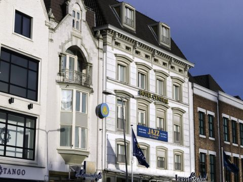
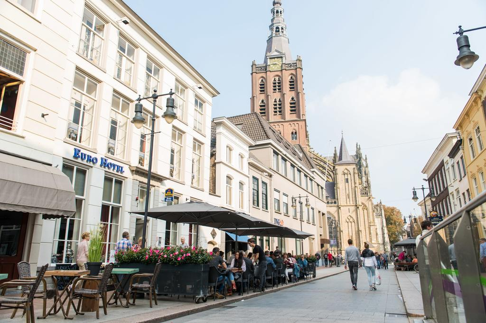
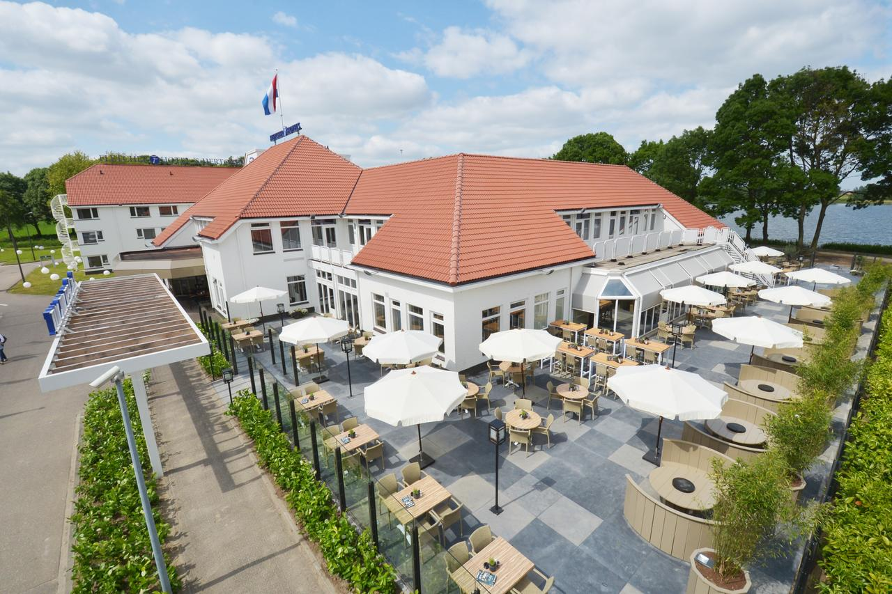
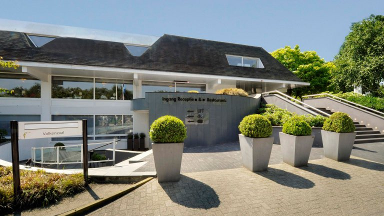
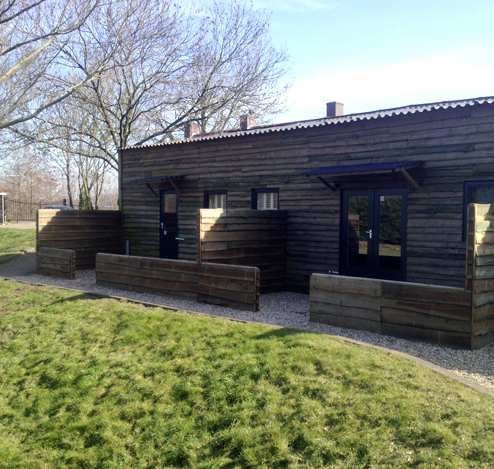
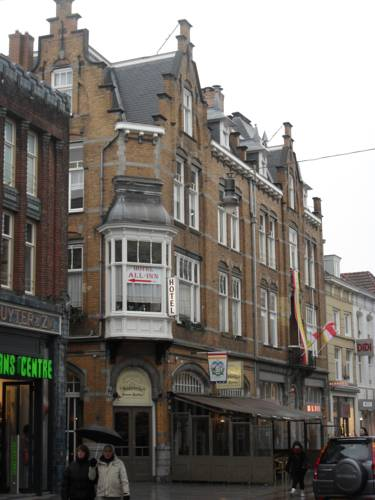

Er zijn verschillende soorten hotels in Den Bosch. Van klein naar groot en van veel luxe naar een simpel appartementje. We zetten de verschillende hotels op een rijtje en geven u een paar aanraders om uw verblijf in Den Bosch nog aangenamer te maken.
Luxe hotels

Golden Tulip Central
Beschrijving:
Het 4-sterrenhotel Golden Tulip Central ligt in hartje 's-Hertogenbosch en biedt uitzicht op het middeleeuwse marktplein, 2 restaurants, 2 bars en een fitnesscentrum op de bovenste verdieping met een uniek uitzicht op de Sint-Janskathedraal.
U kunt uw dag beginnen met een gezond ontbijt in de unieke, 14e-eeuwse, gewelfde kelder. Elke eerste vrijdag van de maand is er live jazzmuziek in een gedeelte van het brasserie-restaurant Tony's Bar.
De Moriaen Bar biedt een gezellige sfeer voor een drankje en een praatje. 's Avonds serveert het restaurant De Leeuwenborgh verfijnde traditionele en seizoensgebonden gerechten uit de Franse en Nederlandse keuken.
Het hotel is gemakkelijk te bereiken met de auto en het openbaar vervoer. U kunt met korting parkeren in Q-Park Tolbrug, tegenover het hotel. U wandelt in slechts 7 minuten naar het centraal station en vindt een bushalte op 50 meter van het hotel.
Stellen kunnen met name de locatie waarderen - ze gaven een score van 9,4 voor een reis voor twee.
klik hier

Westerm Eurohotel
Beschrijving:
Best Western Eurohotel ligt in het centrum van Den Bosch, aan de voet (70 meter) van de middeleeuwse Sint-Janskathedraal. Het hotel biedt gratis WiFi en een 24-uursreceptie. Er is een eigen parkeergarage bij het hotel (lees de kleine lettertjes voor een routebeschrijving naar de parkeergarage).
Dit hotel wordt beheerd door een familie en is voorzien van kamers met een eigen badkamer, thee- en koffiefaciliteiten en extra lange bedden. Het merendeel van de kamers kijkt uit op de Sint-Janskathedraal.
Drankjes zijn verkrijgbaar in de Engelse bar. Voor het diner kunt u terecht in de vele cafés en restaurants in het stadscentrum. Het ontbijt bestaat uit biologische en zelfgemaakte producten.
Met de auto bent u in minder dan 30 minuten bij het attractiepark de Efteling. Safaripark Beekse Bergen ligt ook dichtbij en in de omgeving vindt u veel wandel- en fietsroutes. Het hotel bevindt zich op 2,5 km van de Brabanthallen en op slechts 900 meter van het treinstation.
Stellen kunnen met name de locatie waarderen - ze gaven een score van 9,4 voor een reis voor twee.
klik hier
Standaard hotels

Fletcher Hotel- Restaurant
Beschrijving:
Fletcher Hotel-Restaurant 's Hertogenbosch is in mei 2015 gerenoveerd, en ligt aan de Rosmalense Plas, op slechts 10 minuten rijden van het centrum van Den Bosch. U kunt er genieten van een restaurant, een bar en een terras aan het water.
De kamers beschikken over een eigen badkamer. Elke kamer heeft ook airconditioning en WiFi. Op zondag kunt u laat uitchecken tegen een toeslag. U kunt uw dag beginnen met een heerlijk ontbijtbuffet.
Het hotel heeft een bar en een restaurant, waar u kunt genieten van traditionele en internationale gerechten. Grotere gezelschappen kunnen een besloten plekje reserveren voor de lunch of het diner.
Het Fletcher Hotel-Restaurant 's-Hertogenbosch is de ideale uitvalsbasis voor gasten die graag winkelen of een bezoek willen brengen aan pretpark de Efteling. U kunt verder het safaripark Beekse Bergen verkennen of heerlijk ontspannen in een sauna. De prachtige omgeving is ideaal voor fiets- of wandeltochten, bijvoorbeeld in het natuurpark Het Bossche Broek. Het bruisende Den Bosch biedt winkels, terrasjes en restaurants. In de buurt kunt u tennissen en golfen. Fletcher Hotel-Restaurant 's Hertogenbosch is eenvoudig te bereiken via de snelweg A2.
Het personeel helpt u graag met eventuele vragen of klachten.
klik hier

Van der Valk 's- Hertogenbosch- Vught
Beschrijving:
Van der Valk Hotel 's-Hertogenbosch - Vught ligt in Vught en is gemakkelijk bereikbaar vanaf de A2 en de N65. Er is gratis parkeergelegenheid en het centrum van Den Bosch is bereikbaar in 5 minuten rijden. Aan de overkant van het hotel is een bushalte.
Alle kamers hebben airconditioning, een balkon en een eigen badkamer met een apart bad en een inloopdouche.
Het hotel heeft een restaurant, een lounge en een pianobar. Op zomerse dagen kunt u ontspannen op het terras en tegen een toeslag kunt u gebruikmaken van de naastgelegen fitnessruimte en sauna.
De Efteling bevindt zich op 20 minuten rijden van Van der Valk 's Hertogenbosch - Vught. In de omgeving kunt u ook heerlijk wandelen en fietsen. Het hotel beschikt over een taxiservice die u voor 5 euro naar het centrum van 's-Hertogenbosch kan brengen.
klik hier
Goedkope hotels

Apartement Dieskant
Beschrijving:
Apartement Dieskant ligt in Den Bosch en biedt accommodatie met gratis WiFi, een flatscreen-tv en een keuken.
Elke accommodatie in het vakantiehuis is uitgerust met een vaatwasser, een magnetron, een koffiezetapparaat, een koelkast en een waterkoker. Sommige bieden airconditioning en een zit- en/of eethoek.
Apartement Dieskant biedt een terras.
Er is een tuin bij de accommodatie en in de omgeving kunt u uitstekend fietsen en wandelen.
Het expositiecentrum Brabanthallen ligt op 2,4 km afstand. De dichtstbijzijnde luchthaven is Eindhoven Airport, op 30 km van Apartement Dieskant.
Stellen kunnen met name de locatie waarderen - ze gaven een score van 8,9 voor een reis voor twee.
klik hier

All-In Hotel
Beschrijving:
Het is een simpel hotel, maar schoon. En de eigenaren zijn ontzettend vriendelijk. Je moet niet te veel verwachten, maar je zit op een plek, midden in het centrum, en de gastvrijheid van de eigenaren is overweldigend. Bedden goed, badkamer simpel maar een lekkere douche, de toilet zit echter op de gang.
klik hier